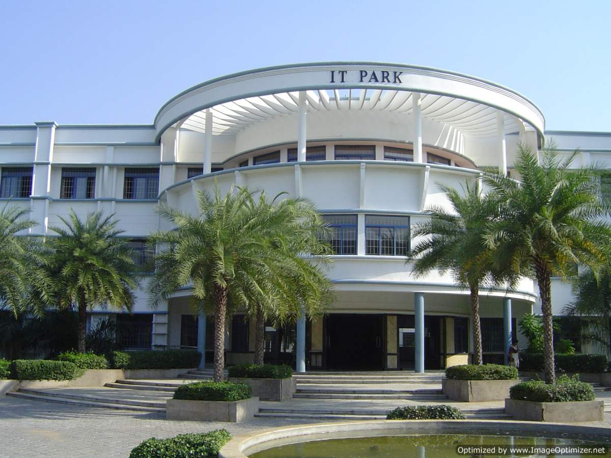

KONGU ENGINEERING COLLEGE
(Autonomous)
INFORMATION TECHNOLOGY
Head of the Department 
Dr.R.Thangarajan
Programs Offered
Program
Intake
BTech-IT
120
B.Tech Artifical Intelligence and Data science
60
B.Tech Artifical Intelligence and Machine Learning
60
MTech Information Technology
6
vision:
To be a centre of excellence for development and dissemination of knowledge in information technology for the nation and beyond.
Mission:
To transform the students into innovative, competent and high quality IT professionals to meet the growing global challenges
To impart value-based IT education to the students and enrich their knowledge
To endeavour for continuous upgradation of technical expertise of students to cater to the needs of the society
To achieve an effective interaction with industry for mutual benefits
PROGRAM SPECIFIC OUTCOMES(PSOs)
PSO1 Foundations of IT:
Comprehend mathematical and computational methodologies to address the problems of various domains.
PSO2 Foundations of IT:
Analyze, design and implement IT enabled solutions to meet industrial needs using appropriate tools and techniques.
Designed and Maintained by KEC-ERP Cell